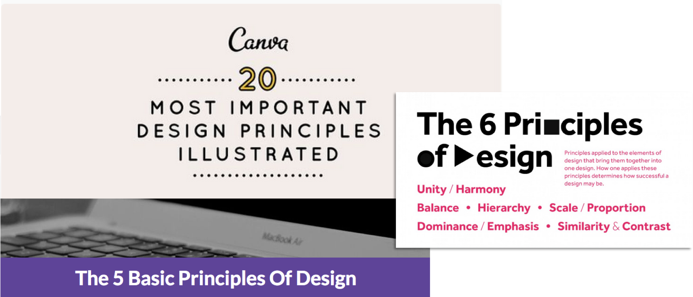

The Principles & Elements of Design
If you do an online search for 'design principles', you'll find there is no single consistent list of principles. Some lists will have 5 principles, Others will have more than 10.

Why don't these lists agree?
Isn't design a universal thing that has rules just like any other industry?
Well, the truth is the people behind these lists are doing their best to communicate the truths of design.
Some teachers will try to break things down more finely, while others will break things down more broadly and allow for nuance within the broad categories. All of these lists overlap in some way, shape, or form.
A New Way Of Thinking About Design
In this course, I differentiate between principles of design and elements of design.
Principles are the broader, philosophical considerations of a design. They are theoretical end goals you must strive to implement in your work. But there is a large amount of flexibility in how you implement these principles.
Elements are the individual tools you can use to achieve the principles. They are the 'how' of implementing principles.
There are 5 Basic Principles:
- Contrast + Emphasis
- Consistency + Repetition
- Organization + Composition
- Readability
- Subtlety
You can achieve and implement these principles by manipulating several different elements.
For example, when it comes to the principle of contrast, there are a number of different things you can do to make something stand out. Things like change the color, font size, font, or amount of white space around it. Each of those individual aspects you can change are the elements of design.
By themselves these elements won't make a good design. But when used in the context of the 5 major principles, they become powerful weapons in the hands of a designer.
This is opposite of what most people think. Most people assume is that design is about obscure fonts, cool colors, and artsy illustrations.
This is far from the truth.
Principles are the key. As you might have noticed, some of these principles appear to be at odds with each other. For example, contrast and subtlety appear to be on opposite ends of the spectrum. A good design will balance each of the principles. You will find that design is about tradeoffs. Sometimes, one principle will have to win out.
An important thing to remember is that the same elements can be used to achieve different principles.
How Elements Are Used To Implement Principles
Let's look at which elements affect which principles.
When it comes to contrast, color, typography, and white space can all be used to achieve the goal of making something stand out.
When it comes to subtlety, the same exact elements apply.
When it comes to organization, we see the addition of alignment, balance, and proximity.
Going Beyond Rules
It's important to be purposeful with the elements of design. Meeting the principles is the bare minimum. But the elements can be used to create something that stands apart - something that matches your content - which is the main goal of any design.
A Simple Illustration
A good way to think of how principles and elements interact is to think of the human body. Every human is unique, but every human has a skeleton.
Everyone has the same 206 bones, the same base configuration. In the same way, every good design will use the principles described above.
Elements, on the other hand, are similar to the meat on top of the skeleton.
Just as every human looks different and is unique, elements are what make a design unique.